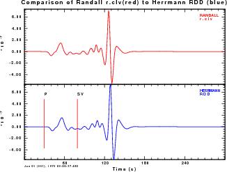
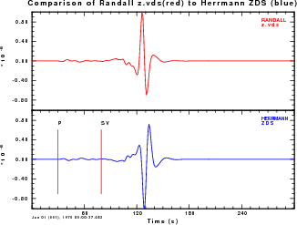
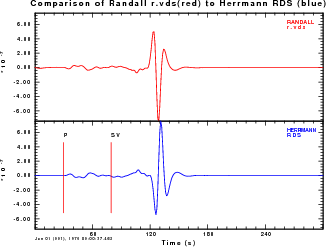
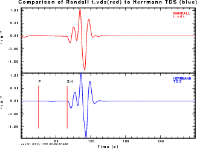
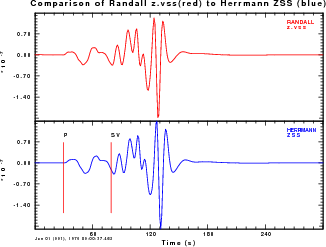
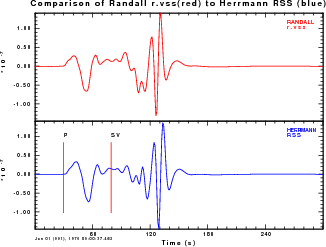
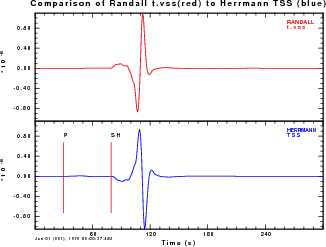
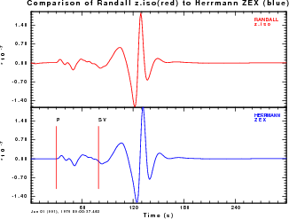
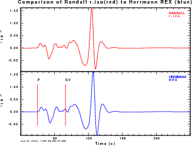

For the comparison synthetics will be generated for the CUS model, a source depth of 15 km and an epicentral distance of 500 km. The command sequences use are as follow:
#!/bin/sh
HS=15.0
cat > dfile << EOF
500.0 1 1024 -1.0 13.0
EOF
hprep96 -M CUS.mod -HS ${HS} -d dfile -ALL
hspec96
hpulse96 -V -p -l 1 > file96
f96tosac -G < file96
The model file is CUS.mod
The Herrmann Greens functions have the names 050000150.RDD 050000150.RHF 050000150.TDS 050000150.ZDD 050000150.ZHF 050000150.RDS 050000150.RSS 050000150.THF 050000150.ZDS 050000150.ZSS 050000150.REX 050000150.RVF 050000150.TSS 050000150.ZEX 050000150.ZVF and are in units of ground velocity of cm/s for a step-like source time function for a seismic moment of 1.0E+20 dyne-cm.
time mijkennett << EOF
rCUS.mod
EOF
#
# -d for displacement, 13 reducing velocity, -1.0 time shift
#
#1e9,0.0
xtsynth -d <
The model file is rCUS.mod
The Randall Greens function have names like r_0500_0015_pz.clv t_0500_0015_pz.clv and z_0500_0015_pz.clv
which are identical. We use the following files for the comparison: z_0500_0015_pz.clv z_0500_0015_pz.vds z_0500_0015_sr.clv z_0500_0015_sr.vds z_0500_0015_st.vds
z_0500_0015_pz.iso z_0500_0015_pz.vss z_0500_0015_sr.iso z_0500_0015_sr.vss z_0500_0015_st.vss
and are in units of ground velocity of cm/s for a step-like source time function for a seismic moment of 1.0E+20 dyne-cm.
Preparation for Comparison
The Green's functions are filtered using the gsac commands
hp c 0.01 n 3
lp c 0.10 n 3
Plots are created showing the first 300 seconds of the traces. Traces in a plot have hte same vertical scale.
Since the Herrmann Green's functions are in units of velocity, these are
integrated for comparison after the filter operations:
int
The focus of the comparison is on long periods, for which the slight difference in Q models will not be significant. However there will be slight timing differences since Randall's code uses acausal Q for reasons of speed, which the Herrmann code uses causal Q.
Comparison
Herrmann
Randall
Comparison Randall
Comparison ZDD
z.clv
RDD
r.clv

ZDS
z.vds

RDS
r.vds

TDS
t.vds

ZSS
z.vss

RSS
r.vss

TSS
t.vss

ZEX
z.iso

REX
r.iso

Conclusion
The conclusions from this test are that the 'z.vds/ZDS', 'r.vds/RDS' and 't.vss/TSS'
differ only in sign. After sign correction, the amplitudes of all agree.
Thus for the Greens functions form Herrmann's Computer Programs in Seismology can
be used with code which previously use the Randall Green's functions, this difference is
accounted for.
Last changed Tue Feb 23 17:15:41 UTC 2010